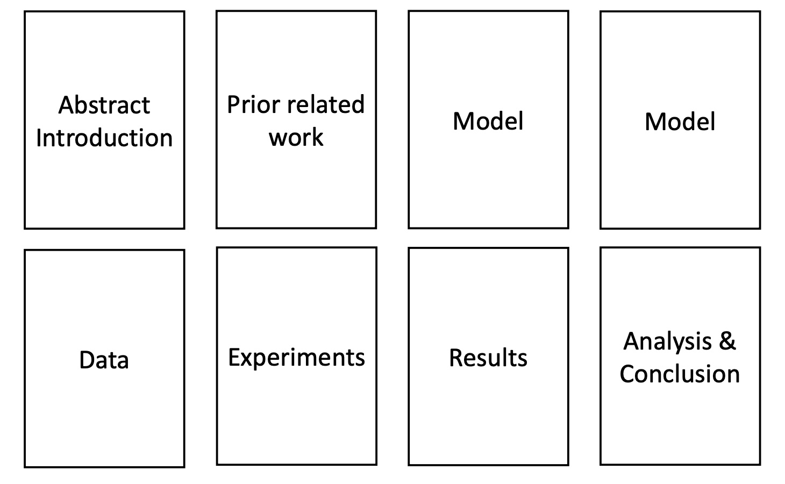
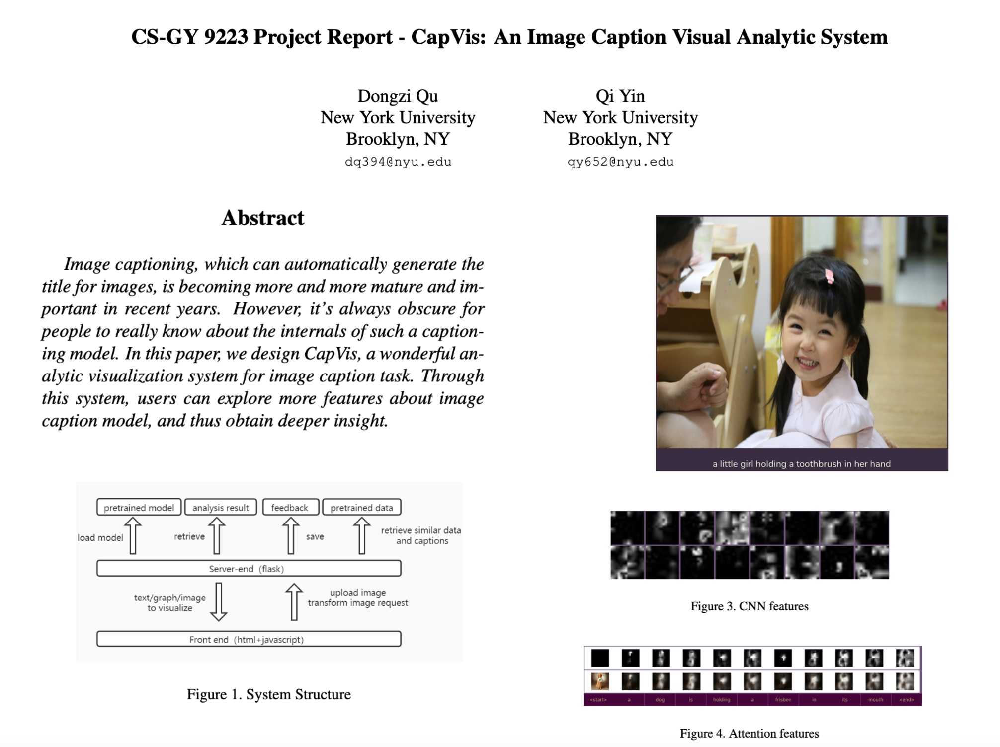
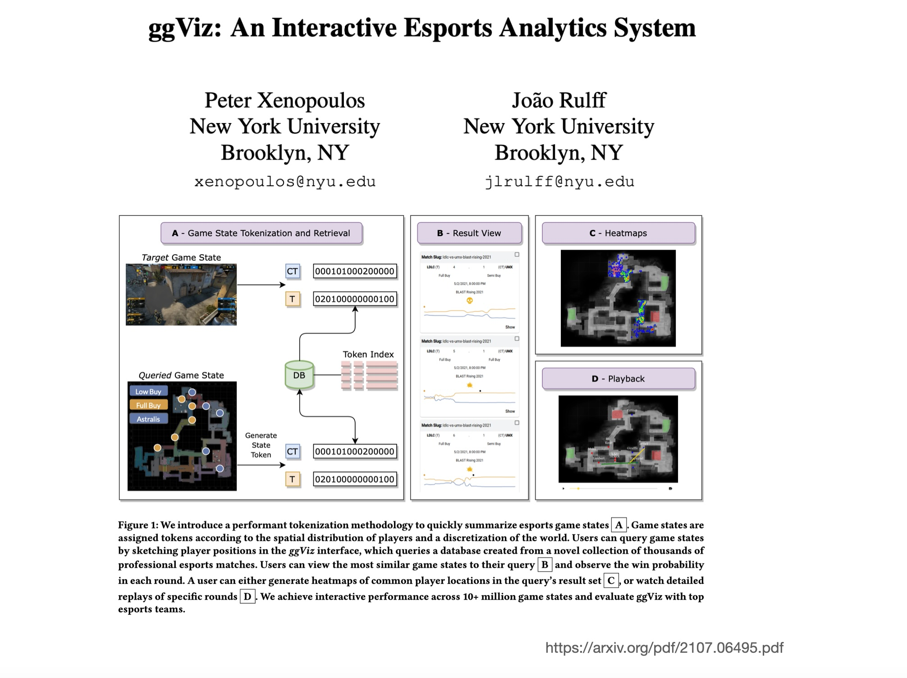
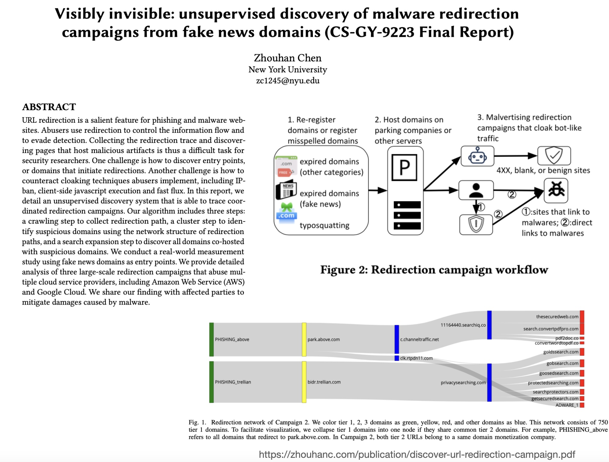
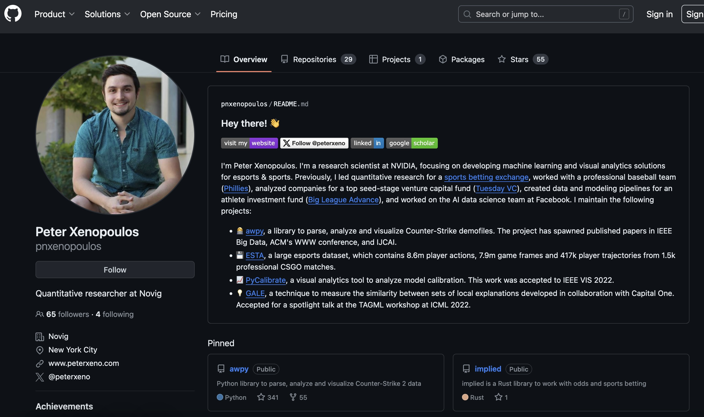

This presentation is heavily influenced and borrows directly from Prof. Christopher Manning’s Stanford cs224n project discussion.
The Final Project
You either:
Do the default project (more on this later)
Propose your own final project, which we must approve
For this, you will need a mentor (instructor/TA/postdoc/PhD)
You can work in teams of 1-3 people. Teams are encouraged. Obviously, more is expected from a team than an individual.
Custom Final Projects
You will need to talk to me or one of the following people about approval for a custom project:
Parikshit Solunke (Lead TA)
Erin McGowan
Vitoria Guardiero
Guande Wu
Joao Rulff
If you intend to do one, please reach out immediately.
Why Choose the Default Final Project (DFP)
If you have limited experience with research, don’t have a clear idea of what you want to do, or need guidance and a goal… Then do the default final project!
Considerations:
The final project will give you more guidance, scaffolding, and clear goals to aim at
The path of success is not to do something that looks weak compared to what you could have done with the DFP
Why do Custom Final Project (CFP)?
If you:
Have some research project that you’re very excited about, which involves the class topics
You want to try something on your own
You want to see more of the process of defining your own research goal, finding data and tools, etc
Then:
Do the custom project
Gamesmanship
DFP are a more guided option, but it’s not that they’re less work
DFP are also open-ended projects where you can explore different approaches and your own creativity
There are great DFP and great CFP… and weak DFP and CFP
We will be giving a Best Project Award for each type of project (assuming quantity and quality of entries)
Project Proposal (Due October 13)
Find a relevant (key) research paper for your topic
For DFP, those are provided
Write a summary of that research paper and what you took away from it as key ideas that you hope to use
Write what you plan to work on, and how you can innovate in your final project
Describe as needed, in particular for CFP:
Project plan, relevant existing literature, data that you will use, how you will evaluate your work
Project Proposal: Critical Reading
Skill: How to think critically about a research paper
What were the main novel contributions?
Is the work general and reusable or a special case?
Are there flaws or neat details in what they did?
How does it fit with other papers on similar topics?
Does it provoke good questions on further or different things to try?
Project Proposal: Planning Tips
How to do a good job on your project plan?
You need to have an overall sensible idea
But most project plans are lacking in nuts-and-bolts:
Do you have your data? Can you collect it quickly?
Do you have a realistic evaluation plan? Is it convincing?
Do you have appropriate baselines?
Project Writeup
Writeup quality is very important to your grade!

Sample Project Example 1

Sample Project Example 2

Sample Project Example 3

Plan To Use It in Your Portfolio

Plan To Use It in Your Portfolio
Example: From Class Project to Research Impact
https://github.com/VIDA-NYU/pycalibrate
https://arxiv.org/pdf/2207.13770.pdf
This project started as a class visualization project, became an open-source library, and resulted in a published paper. Your project could follow a similar trajectory!
Project Timeline
Milestone
Due Date
Details
Proposal
Oct 13
2-3 pages, includes paper summary + plan
Mid-term Presentation
Oct 20
5-minute presentation, show progress
Final Presentation
Dec 1 & Dec 8
10-minute presentation + Q&A
Final Report
Dec 11
6-8 pages (conference paper format)
Evaluation Criteria
Technical Quality (60%)
Soundness of approach
Appropriate evaluation
Depth of analysis
Innovation beyond baseline
Presentation (15%)
Clarity of slides
Quality of demo/visualizations
Handling of Q&A
Writeup (20%)
Clear motivation and contributions
Proper related work
Effective visualizations
Insightful discussion
Teamwork (5%)
Equal contribution (for teams)
Clear division of labor
Collaboration evidence
Default Project Topics
Will be announced on Discord this week!
Potential themes:
Model interpretability visualization
High-dimensional data exploration
Interactive ML debugging tools
Fairness and bias visualization
Time-series model visualization
Embedding space exploration
Each DFP topic will include a reference paper, dataset suggestions, and baseline approaches.
Getting Help
Office Hours:
Instructor office hours: Wednesdays 2-3 PM
TA office hours: Posted on Discord
Resources:
Discord #project-discussion channel
Weekly check-ins during lab sessions
Mid-term presentation feedback
Don’t wait until the last minute!
Tips for Success
Start Early - Don’t wait until after Thanksgiving!
Iterate - Build simple version first, then improve
Visualize Often - Make plots to understand your data/results
Document - Keep notes, screenshots for your writeup
Test on Real Users - Get feedback on your visualizations